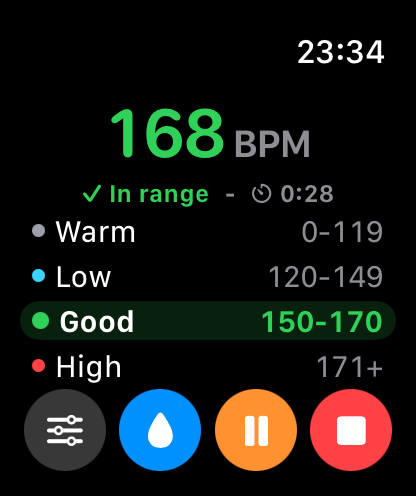

Workout session
Uses HealthKit workout sessions for live Apple Watch heart-rate monitoring during exercise.
Apple Watch fitness companion
Live heart-rate range cues that help you know when to ease off, stay steady, or push more during a workout.

Built for training
Choose a workout type, set your range, and keep your focus on the session instead of constantly checking numbers.
Uses HealthKit workout sessions for live Apple Watch heart-rate monitoring during exercise.
Vibration cues, repeated feedback, session time, and Save to Health can be controlled in Setup.
Heartbeat Stocker is for workout guidance only. It is not medical advice, diagnosis, or emergency monitoring.